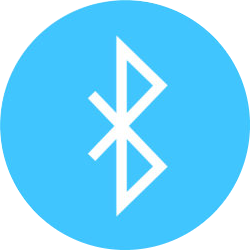

<ons-page id="bluetooth" style="text-align: center;"  class="page__background bluetooth-page" >
	<ons-toolbar class="toolbar-background-bl" >
	 <div class="left">
	   <ons-back-button style="color: aliceblue;">Back</ons-back-button>
		</div>
		<div class="center" style="color:rgb(255, 255, 255);text-align: center;">Bluetooth</div>
	   <div class="right">
	  <ons-toolbar-button onclick='gohome();' >  
	  <span style="color: rgb(255, 255, 255);">
	   <i class="fa-solid fa-home"></i>
	 </span>
	 </ons-toolbar-button>
	</div>
   </ons-toolbar>
   <!------------------------------------------------------------------------------------------------------->
   <!---
   auto-scroll: automatically snap to item borders
   overscrollable: scroll past the first and last element of the carousel.
   fullscreen: cover the whole screen you can use the fullscreen
   ---->
   <!---
   <ons-carousel fullscreen swipeable auto-scroll overscrollable id="carousel" onpostchange="changeTabbar()" animation="true"> -->
   <ons-carousel fullscreen swipeable auto-scroll overscrollable id="carousel"> 
   
   <!------------Content for the first carousel item (bl scan/connected)------------------------------------>	
   <!--first bluetooth interface-->
   <ons-carousel-item>
	   <div style="padding-top: 5px; margin-top: 20px;" id="first-interface">
	   <div id="outerContainer">
		 <div id="container">
		   <div class="item">
			 
		   </div>
	   </div> 
	   
	   </div>
	   <br>
	   <br>
   
	   <div style="text-align: center;" id="scanMsg">
		 <br>
	   <tr>
		 
		<p style="color: aliceblue; ">Tap to scan</p>
	   </tr>
	   </div>
	   </div>
	   
   <!--Second bluetooth interface-> Scanning process-->
   
   <div style="padding-top: 5px; margin-top: 20px;" id="scanningInterface">
   <div id="outerContainer">
	 <div id="container">
	   <div class="item">
		 
	   </div>
   
	 
   <div class="circle" style="animation-delay: -3s"></div>
   <div class="circle" style="animation-delay: -2s"></div>
   <div class="circle" style="animation-delay: -1s"></div>
   <div class="circle" style="animation-delay: 0s"></div>
   </div>
   
   
   
   </div>
   <br>
   <br>
   <div style="text-align: center;" id="scanningMsg">
   <br>
	
   <tr>
	 
	<p style="color: aliceblue; font: bold;">Scanning for devices..
   <br>
	</p>
   </tr>
   </div>
   </div>
   
   <!--Third bluetooth interface-> Device connected-->
   
   <div style="padding-top: 5px; margin-top: 20px;" id="deviceConnected">
	   <div id="outerContainer">
		 <div id="container">
		   <div class="item">
			 
		   </div>
	   </div>
	   </div>
	   <br>
	   <br>
	   <div style="text-align: center;" id="deviceFoundMsg">
	   <br>
	   <tr>
		<p style="color: aliceblue; font: bold;">Device Paired
	   <br>
		</p>
	   </tr>
	   </div> 
   </div>
   
   <!---------------------------Popup tab----------------------------------------------------------------------------------------------->
   <div class="popup-container" id="popup">
   
	 <div class="popup-background"></div>
	 <div class="popup">
   <!--<span class="close-x" style="font-size: 1.5em;right: 55px; position: absolute; top:240px">&times;</span> -->	
	   <h1 style="font-size: 25px;">Available Devices</h1>
	   <ul class="onsen-list">
   
		 <ons-list>
		   <li>
			 <i class="fa-brands fa-bluetooth" style="font-size: 23px;"></i>
			 <div>
			   <h2 id="btscandiv" class="background-grey mt-3"></h2>
			 </div>
		   </li>
   
		 </ons-list>
	   </ul>
	   <button class="close-button" onclick="hidePopup()">Close</button>
	   
   
	 </div>
   </div>
   
   </ons-carousel-item>
   
   <!----------------------------------Content for the second carousel item (Parametres)--------------------------------------------->
   <ons-carousel-item style="background-color: #ffffff;">
	   <div style="margin-top: 20px; color: #000000;margin-right: 250px;">
		 <h3 style="margin-left: -46px;">Settings</h3>
	   </div>
   
   
	   <ons-list-header>Connected to</ons-list-header>
	   <ons-list-item>
		 <div class="left">
		   <ons-icon icon="fa-bluetooth-b" class="list-item__icon"></ons-icon>
		 </div>
		 <div class="center">
		   <span id="connectTO" style="color:rgb(0, 0, 0)"></span>   	
		 </div>
		 <div class="right">
		   <ons-switch id="mySwitch"></ons-switch>
		 </div>
	   </ons-list-item>
   
	   <ons-list-header>PAIRED DEVICES</ons-list-header>
	   <ons-list-item expandable>
		 Tap to expand
		 <div class="expandable-content">		
		   <ons-list-item>
			   <div class="left">
				 <ons-icon icon="fa-bluetooth-b" class="list-item__icon"></ons-icon>
			   </div>
			   <div class="center">
				 Device A
			   </div>
			 </ons-list-item>
	   </div>
   
	   </ons-list-item>
	   <ons-list-header>AVAILABLE DEVICES</ons-list-header>
	   <ons-list-item>
	   <div class="left">
		 <ons-icon icon="fa-bluetooth-b" ></ons-icon>
	   </div>
	   <div>
		 Device A
	   </div>
	 </ons-list-item>
	 <ons-list-item>
	   <div class="left">
		 <ons-icon icon="fa-bluetooth-b" ></ons-icon>
	   </div>
	   <div>
		 Device A
	   </div>
	 </ons-list-item>
   <!----------------------------------The end of the second swipe page(number 1)------------------------------------------------------------------------->
	 </ons-carousel-item>
   
   
   <!----------------------------------The end of ons-carousel items------------------------------------------------------------------------->
   </ons-carousel>
   
   <!----------------------------------Have to delete this-------------------------------------------------------------------------->
   <div id="hide-content">
	   <br>
		  <ons-button disabled="true"  id="btdisconnect" modifier="large" onclick="disconnect(event)"   >
			  disconnect</ons-button>      
		  <br>
		  <br>
   <ons-list id="btscandiv" class="background-grey mt-3">
	   </ons-list>
	   <br>
	   <br>
	   <hr>
	   <br>
   <span id="char2001" ></span> <br>
	   </div>
   <!------------------------------------------------------------------------------------------------------->
   
   <!--bottom toolbar-----------------------------------------Not sure yet---------------------------------->		
   
		   <!--<ons-bottom-toolbar class="bl-toolbar-bottom">
				   <div class="bottom-toolbar__content">
					 <div class="bottom-toolbar__item" onclick="doSomething()">
					   <ons-icon icon="fa-home"></ons-icon>
					   <div class="bottom-toolbar__label">Home</div>
					 </div>
					 <div class="bottom-toolbar__item" onclick="doSomethingElse()">
					   <ons-icon icon="fa-cog"></ons-icon>
					   <div class="bottom-toolbar__label">Settings</div>
					 </div>
				   </div>
				 </ons-bottom-toolbar> -->
   <!----------------------------------------------------------------------------->
   
   <script>
	
   /**
   //This is a nice functionality for closing a popup
	// added Close-x into the selectors
   $('.close-x').click(function () {
	   $('#popup').fadeOut('slow');
   }); **/
   
   
   
   
   
   
   /***************************************************************************************/
   /********************************************************************************************/
   //initializing
	$('#scanningInterface').hide();
	$('#hide-content').hide();
	hidePopup();
	$('#deviceConnected').hide();
	//var switch1 = document.getElementById('switch-1');
	var mySwitch = document.getElementById("mySwitch");
   
   //initializing the bluetooth page, if the device is paired, then display the interface for paired device
   document.addEventListener('init', function(event) {
	 if (event.target.matches('#bluetooth')) {
	  testingconn(); }}, false);
   
   /************************************************************************/
	function hidePopup() {
	   var popup = document.getElementById("popup");
	   popup.style.display = "none";
	   console.log("popup is hided");
   
	 }
	/******************************************************************************/
	
   
   /****************************************************************************/
   
   var devices=fble.founddevices()
   
   devices.forEach(function(o,nr) { // add  devices already found
		//console.log(i+"  "+e.name);
	   
		   var deviceId = "id_" + o.name + "_" + nr;  
	   adddevicetolist(o,nr); 
							 });
   
   //are we already connected when changing to bluetooth.html
   var connecteddevice=fble.getconnected();
   if (connecteddevice.name){
	var deviceId = "id_" + connecteddevice.name + "_" + connecteddevice.nr; 
	console.log("already connected to "+deviceId);
   let b=document.getElementById(deviceId);
	   if (b) {
			  b.style.background="LightBlue";	
			  }
   b=document.getElementById("btdisconnect");
   b.disabled=false;
   
   } else {
	   let b=document.getElementById("btdisconnect"); 
	   b.setAttribute('disabled','true');
		  }
   //-----------------------------------------------------------------------------
   function scanforble(){
	   if (fble.isconnected()) {
				 ons.notification.toast('still connected to ' + o.name, { timeout: 2000 });
				 return;
						   }
   console.log("scanforble");
   //document.getElementById("circles").show();
   
   document.getElementById('btscandiv').innerHTML="";	
   fble.scan();
   
   $('#first-interface').hide();
   $('#scanningInterface').show();
   // Set a timeout of 10 seconds to stop the scan
  setTimeout(function() {
    fble.onscanstop();

    // Check if any devices were found
    if (document.getElementById('btscandiv').innerHTML.trim() === '') {
      // "No devices found, show a popup
   alert("No Bluetooth devices found. Please make sure your device is discoverable and try again.");
   $('#first-interface').show();
   $('#scanningInterface').hide();
    }
  },
   10000);

   
   }
   
   
   //-----------------------------------------------------------------------------

   
   fble.onscanstop(function(){
   console.log("stoped scanning from onscanstop method ");
   });
   //-----------------------------------------------------------------------------
   fble.ondevicefound(function(dev,nr){
   //console.log("found "+JSON.stringify(dev));
   adddevicetolist(dev,nr);
   });
   //-----------------------------------------------------------------------------
   
   //-----------------------------------------------------------------------------
   //dev: object representing the BLE device to add
   //nr: a number representing the device's order in the list
   function adddevicetolist(dev,nr){
   var deviceId = "id_" + dev.name + "_" + nr;    
		 var element= document.createElement('ons-list-item');
		 element.setAttribute('tappable', 'true');
		 element.setAttribute('id', deviceId);
	   element.innerHTML = dev.name+"  "+dev.rssi;
	   
	   element.setAttribute('btaddress',dev.address);
	   element.setAttribute('btname',dev.name);
	   
	   element.style.fontSize="36px;";
   
	   element.addEventListener("click", function (e) {
		var btn=e.currentTarget;
		var address=btn.getAttribute('btaddress');
		var btname=btn.getAttribute('btname');	
		if (fble.isconnected()) {
			 ons.notification.toast('already connected to ' + btname, { timeout: 2000 });
		return; 	
		}
	   console.log("clicked "+btn.id+"  "+address);
		fble.connect(address);	
	   });
   var d=document.getElementById('btscandiv');
   if (d) 	d.appendChild(element); 
   setTimeout(function() {
	   $('#popup').show();
	   console.log("popup is showed from adddevicetolist method called from scanforble method");
   
	 }, 5000);
   }
   //-----------------------------------------------------------------------------
   fble.onsubscribed(function(o){
   var deviceId = "id_" + o.name + "_" + o.nr;    
   console.log(deviceId+" connected and subscribed to characteristic "+o.characteristic); 
   let b=document.getElementById(deviceId);
	   if (b) {
			  b.style.background="LightBlue";	
			  }
   b=document.getElementById("btdisconnect");
   b.disabled=false;
   //bluetooth icon and name in the home page
   b=document.getElementById("bticononhome");
   b.style.color="LightBlue";
   b=document.getElementById("btconnectto");
   c=document.getElementById("connectTO");
   c.innerHTML=o.name;	
   b.innerHTML=o.name;	
   $('#scanningInterface').hide();
   $('#deviceConnected').show();
   document.querySelector('ons-switch').setAttribute('checked', 'true')
   
   if (apponsubscribed)	setTimeout(()=>{apponsubscribed()},1000);
   });
   
   fble.ondisconnected((o)=>{
						 var deviceId = "id_" + o.name + "_" + o.nr;
						 console.log("disconnected "+deviceId); 
							 let b=document.getElementById("btdisconnect");       
						 b.disabled=true;
							b=document.getElementById(deviceId);     
						b.style.background="none";
   
   b=document.getElementById("bticononhome");
   b.style.color="white";
   b=document.getElementById("btconnectto");
   b.innerHTML="";
   ons.notification.toast('disconnected ' + o.name, { timeout: 3000 }); 	
							 });
   
   function disconnect(e){
   fble.disconnect();
   }
   
   /************************************************************************/
   function popupshow(){
	   
	   if (fble.isconnected()) {
				 ons.notification.toast('already connected to ' + btname, { timeout: 2000 });
	   $('#scanningInterface').hide();
	   $('#deviceConnected').show();
	   $('#first-interface').hide();
	   console.log("popup is hided from init method");
   
   }}
   /************************************************************************/
   
   //when navigation from home to bluetooth interface, check if the device is connected and display the appropriate interface
   function testingconn(){
	   
   if (fble.isconnected()) {
   ons.notification.toast('already connected to ' + btname, { timeout: 2000 });
   $('#scanningInterface').hide();
   $('#deviceConnected').show();
   $('#first-interface').hide();
   $('#popup').hide();}}
   /****************************************************************************/
   //Swipping right/left
   ons.ready(function() {
	 var carousel = document.addEventListener('postchange', function(event) {
	   console.log('Changed to ' + event.activeIndex)
	 });
   });
   /****************************************************************************//**
   
   mySwitch.addEventListener("change", function() {
	 if (this.disabled) {
	   // Switch is turned on, call your method here
	   disconnect();
	   $('#deviceConnected').hide();
   $('#first-interface').show();
	 } else {
	   // Switch is turned off, disable the switch
	   this.disabled = false;
	 }
   }); **/

// Add an event listener to the switch
mySwitch.addEventListener("change", function() {
  if (!this.checked) {
    // Switch is turned off, disconnect from the device
	fble.disconnect();
   $('#scanningInterface').hide();
	$('#deviceConnected').hide();
	$('#first-interface').show();


  }
});

   
   
   
   
   
   </script>
   
   </ons-page>
	 
   
	 
	 
   